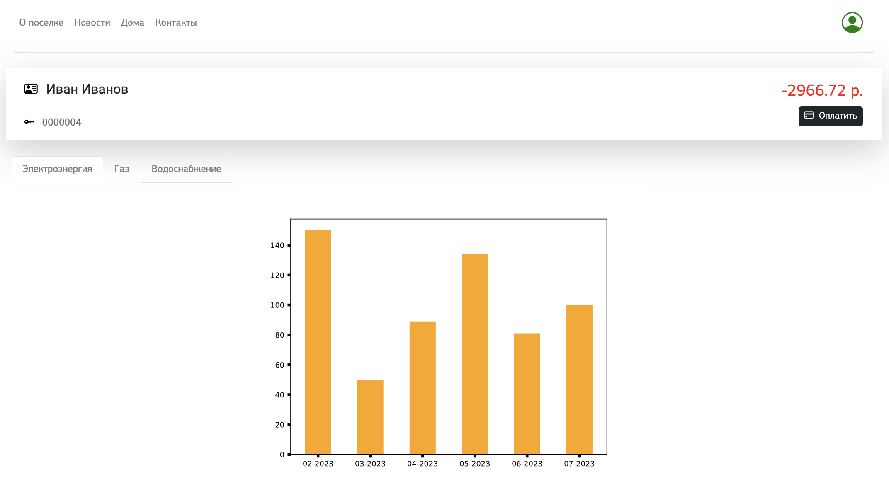

Riviera
Сайт коттеджного поселка, в котором реализованы формы регистрации, авторизации, обратной связи
и передачи показаний счетчиков, личным кабинетом пользователя c оплатой коммунальных платежей
через Ю-Кассу с простой аналитикой, историей показаний и баланса. Данные, в том числе новости
и описания домов хранятся в базе данных, так что их с легкостью можно изменить не залезая в
разметку HTML.